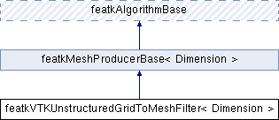

Filter for converting a vtkUnstructuredGrid into a featkMesh. More...
#include <featkVTKUnstructuredGridToMeshFilter.h>
Inheritance diagram for featkVTKUnstructuredGridToMeshFilter< Dimension >:

Public Member Functions | |
| featkVTKUnstructuredGridToMeshFilter () | |
| ~featkVTKUnstructuredGridToMeshFilter () | |
| void | passAllAttributesOff () |
| void | passAllAttributesOn () |
| void | setElementAttributesToPass (std::set< std::string > attributes) |
| void | setInputVTKUnstructuredGrid (vtkSmartPointer< vtkUnstructuredGrid > mesh) |
| void | setNodeAttributesToPass (std::set< std::string > attributes) |
| void | setPassAllAttributes (bool pass) |
| FEATK_EXPORT void | execute () |
 Public Member Functions inherited from featkMeshProducerBase< Dimension > Public Member Functions inherited from featkMeshProducerBase< Dimension > | |
| virtual | ~featkMeshProducerBase () |
| featkMesh< Dimension > * | getOutputMesh (unsigned int port=0) const |
| Public Member Functions inherited from featkAlgorithmBase | |
| virtual | ~featkAlgorithmBase () |
| virtual bool | check () |
| bool | update () |
Additional Inherited Members | |
| Protected Member Functions inherited from featkMeshProducerBase< Dimension > | |
| featkMeshProducerBase () | |
| void | setNumberOfOutputMeshes (unsigned int number) |
| Protected Member Functions inherited from featkAlgorithmBase | |
| featkAlgorithmBase () | |
| Protected Attributes inherited from featkMeshProducerBase< Dimension > | |
| std::vector< featkMesh< Dimension > * > | outputMeshes |
Detailed Description
template<unsigned int Dimension>
class featkVTKUnstructuredGridToMeshFilter< Dimension >
Filter for converting a vtkUnstructuredGrid into a featkMesh.
featkVTKUnstructuredGridToMeshFilter is a filter that produces a featkMesh from a vtkUnstructuredGrid.
featkMeshToVTKUnstructuredGridFilter translates vtkPoints into featkNode coordinates, vtkCell into featkElement node connectivity, and vtkPointData and vtkCellData arrays into featkNode and featkElement attributes respectively.
- Warning
- For now, only 3D vtkUnstructuredGrid with VTK_TETRA and/or VTK_HEXAHEDRON cells are supported.
- Template Parameters
-
Dimension The cartesian dimension of the filter.
Constructor & Destructor Documentation
◆ featkVTKUnstructuredGridToMeshFilter()
template<unsigned int Dimension>
| featkVTKUnstructuredGridToMeshFilter< Dimension >::featkVTKUnstructuredGridToMeshFilter |
◆ ~featkVTKUnstructuredGridToMeshFilter()
template<unsigned int Dimension>
| featkVTKUnstructuredGridToMeshFilter< Dimension >::~featkVTKUnstructuredGridToMeshFilter |
Member Function Documentation
◆ execute()
template<unsigned int Dimension>
|
virtual |
Implements featkAlgorithmBase.
◆ passAllAttributesOff()
template<unsigned int Dimension>
| void featkVTKUnstructuredGridToMeshFilter< Dimension >::passAllAttributesOff |
◆ passAllAttributesOn()
template<unsigned int Dimension>
| void featkVTKUnstructuredGridToMeshFilter< Dimension >::passAllAttributesOn |
◆ setElementAttributesToPass()
template<unsigned int Dimension>
| void featkVTKUnstructuredGridToMeshFilter< Dimension >::setElementAttributesToPass | ( | std::set< std::string > | attributes | ) |
◆ setInputVTKUnstructuredGrid()
template<unsigned int Dimension>
| void featkVTKUnstructuredGridToMeshFilter< Dimension >::setInputVTKUnstructuredGrid | ( | vtkSmartPointer< vtkUnstructuredGrid > | mesh | ) |
◆ setNodeAttributesToPass()
template<unsigned int Dimension>
| void featkVTKUnstructuredGridToMeshFilter< Dimension >::setNodeAttributesToPass | ( | std::set< std::string > | attributes | ) |
◆ setPassAllAttributes()
template<unsigned int Dimension>
| void featkVTKUnstructuredGridToMeshFilter< Dimension >::setPassAllAttributes | ( | bool | pass | ) |
The documentation for this class was generated from the following files:
- D:/Documents de Corentin/Programmation/C++/featk/src/featk/algorithm/featkVTKUnstructuredGridToMeshFilter.h
- D:/Documents de Corentin/Programmation/C++/featk/src/featk/algorithm/featkVTKUnstructuredGridToMeshFilter.cpp